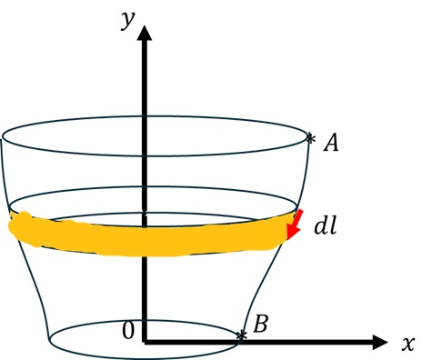

Pourquoi une formulation variationnelle ?
Dans le chapitre précédent, nous avons décrit le mouvement à partir des lois de Newton. Cette approche est très efficace lorsque les forces et les coordonnées du système sont simples. Lorsque le nombre de degrés de liberté augmente ou que le système est soumis à des contraintes, l’écriture directe des équations de Newton devient rapidement complexe.
Le calcul variationnel fournit une autre formulation : au lieu de chercher directement l’équation différentielle du mouvement, on cherche une fonction qui rend stationnaire une quantité appelée fonctionnelle. Cette méthode est à la base du principe de moindre action.
Fonctionnelles
En analyse classique, une fonction associe un nombre à une variable : \(x\longmapsto f(x)\). Une fonctionnelle associe au contraire un nombre à une fonction entière. Considérons :
Le problème variationnel consiste à déterminer la fonction \(y(x)\) pour laquelle la fonctionnelle est stationnaire :
Une fonctionnelle stationnaire peut correspondre à un minimum, à un maximum ou à un point selle.
La variation d’une fonction
Considérons une famille de fonctions voisines :
Le paramètre réel \(\alpha\) mesure l’écart à la fonction \(y\), tandis que \(\eta(x)\) est une fonction arbitraire. Les extrémités sont maintenues fixes. La fonctionnelle devient :
La variation de la fonction et celle de sa dérivée sont :
Ainsi, la variation de la fonctionnelle s’écrit :
Dérivation de l’équation d’Euler-Lagrange
Intégrons le second terme par parties :
Les variations s’annulent aux extrémités ; le terme de bord disparaît. Comme \(\eta(x)\) est arbitraire, la condition \(\delta\mathcal{F}=0\) impose :
Résultat fondamental
Pour \(\mathcal{F}[y]=\int_{x_i}^{x_f}f(y,y',x)\,dx\), la stationnarité \(\delta\mathcal{F}=0\) conduit à l’équation d’Euler-Lagrange.
Premier exemple : le plus court chemin dans le plan
La longueur d’une courbe \(y(x)\) est \(L=\int_{x_i}^{x_f}\sqrt{1+y'^2}\,dx\). Ici \(f(y,y')=\sqrt{1+y'^2}\) et \(\partial f/\partial y=0\), donc :
La courbe de longueur minimale entre deux points du plan est donc une droite.
L’identité de Beltrami
La dérivée totale de \(f(y,y',x)\) et l’équation d’Euler-Lagrange donnent :
Si \(f\) ne dépend pas explicitement de \(x\), cette relation se simplifie :
Applications
La brachistochrone
Un point matériel glisse sans frottement, au repos initial, sous l’action de la pesanteur. Parmi toutes les courbes reliant deux points, nous cherchons celle qui minimise le temps de parcours. La conservation de l’énergie donne \(v=\sqrt{2gy}\), tandis que \(ds=\sqrt{1+y'^2}\,dx\).
La fonction ne dépend pas explicitement de \(x\). L’identité de Beltrami donne, après simplification :
La solution est une cycloïde :
À retenir
Temps de parcours minimal \(\Longrightarrow \delta t=0 \Longrightarrow\) cycloïde.
Exercice : surface de révolution minimale
Considérons une courbe \(y(x)\) tournée autour de l’axe \(y\). Un élément de surface vaut \(dA=2\pi x\,dl\), avec \(dl=\sqrt{1+y'^2}\,dx\). Il suffit donc de minimiser \(\mathcal{F}[y]=\int x\sqrt{1+y'^2}\,dx\).

- Déterminer l’équation différentielle vérifiée par \(y(x)\).
- Résoudre cette équation et représenter le profil obtenu.
- Calculer la surface de révolution correspondante.
- Interpréter physiquement la forme obtenue.
Les géodésiques
Une géodésique est une courbe qui rend stationnaire la distance entre deux points soumis à une contrainte géométrique. Dans le plan, c’est une droite ; sur une surface courbe, le problème est plus riche.
Exercice : géodésique sur une sphère
- Écrire la longueur d’une courbe reliant deux points en coordonnées sphériques.
- Appliquer l’équation d’Euler-Lagrange.
- Montrer que la géodésique est un grand cercle de la sphère.
- Interpréter géométriquement le résultat.
Exercice : géodésique sur un cylindre
- Construire la fonctionnelle de longueur sur le cylindre.
- Utiliser l’équation d’Euler-Lagrange.
- Montrer qu’après déroulement la géodésique est une droite.
- En déduire qu’après réenroulement, elle correspond à une hélice.
Exercice : géodésique sur un cône
Considérons \(z=1-\sqrt{x^2+y^2}\), avec \(A=(0,-1,0)\) et \(B=(0,1,0)\).
- Établir l’élément de longueur sur la surface et construire la fonctionnelle.
- Déterminer la géodésique et calculer sa longueur.
- Interpréter cette géodésique comme le chemin le plus court autour d’un volcan.
Une méthode élégante consiste à développer le cône dans un plan : la géodésique devient alors un segment de droite dans ce plan développé.
Du calcul variationnel à la mécanique analytique
Pour un système décrit par une coordonnée généralisée \(q(t)\), considérons la fonctionnelle :
Cette quantité est l’action, et \(L\) le Lagrangien. Le principe de Hamilton affirme que la trajectoire physique rend l’action stationnaire : \(\boxed{\delta S=0}\).
Après intégration par parties, les positions initiale et finale étant fixées, \(\delta q(t_i)=\delta q(t_f)=0\). Puisque \(\delta q(t)\) est arbitraire :
Idée fondamentale
Le calcul variationnel permet de passer de \(\delta S=0\) aux équations de Lagrange : une formulation de la dynamique fondée sur un principe variationnel.
Résumé du chapitre
| Fonction | \(y(x)\) |
|---|---|
| Fonctionnelle | \(\mathcal{F}[y]=\int f(y,y',x)\,dx\) |
| Variation | \(y_\alpha=y+\alpha\eta\), avec \(\eta(x_i)=\eta(x_f)=0\) |
| Stationnarité | \(\delta\mathcal{F}=0\) |
| Euler-Lagrange | \(\frac{\partial f}{\partial y}-\frac{d}{dx}\frac{\partial f}{\partial y'}=0\) |
| Beltrami | \(f-y'\frac{\partial f}{\partial y'}=C\) si \(f\) ne dépend pas explicitement de \(x\) |
| Action | \(S[q]=\int L(q,\dot q,t)\,dt\) |
| Principe de Hamilton | \(\delta S=0\) |
| Équations de Lagrange | \(\frac{d}{dt}\frac{\partial L}{\partial\dot q}-\frac{\partial L}{\partial q}=0\) |